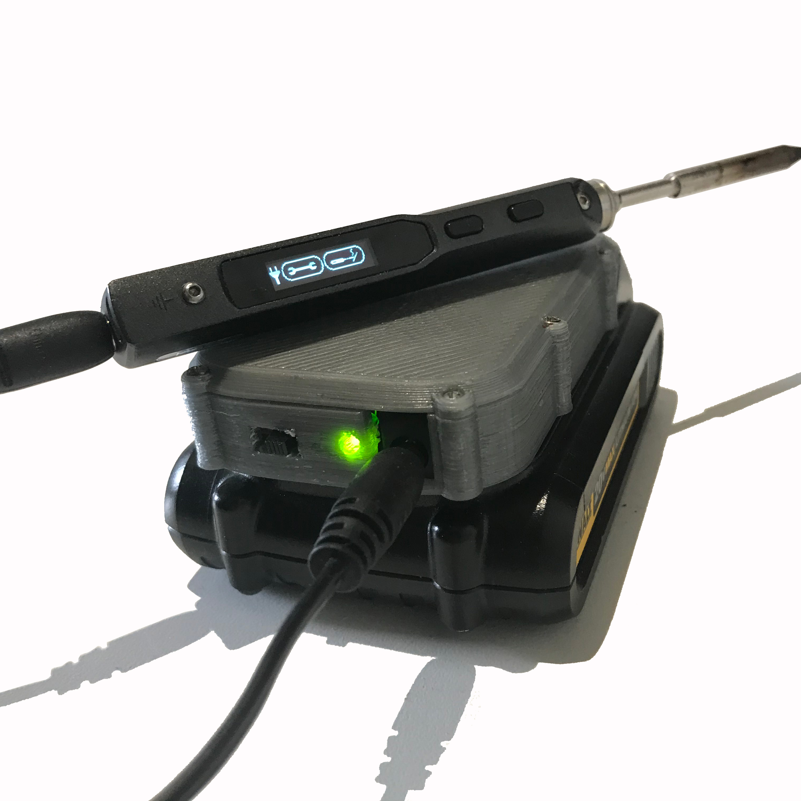
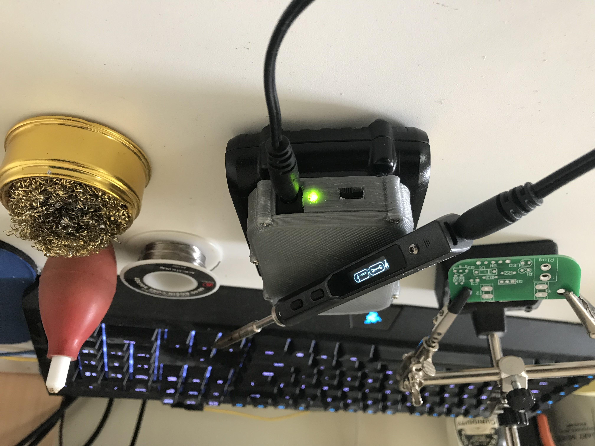
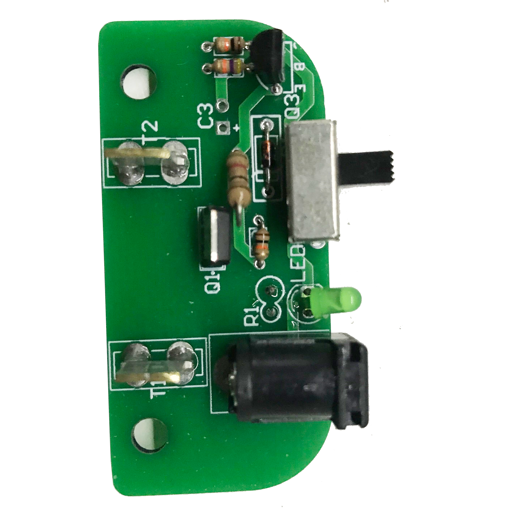
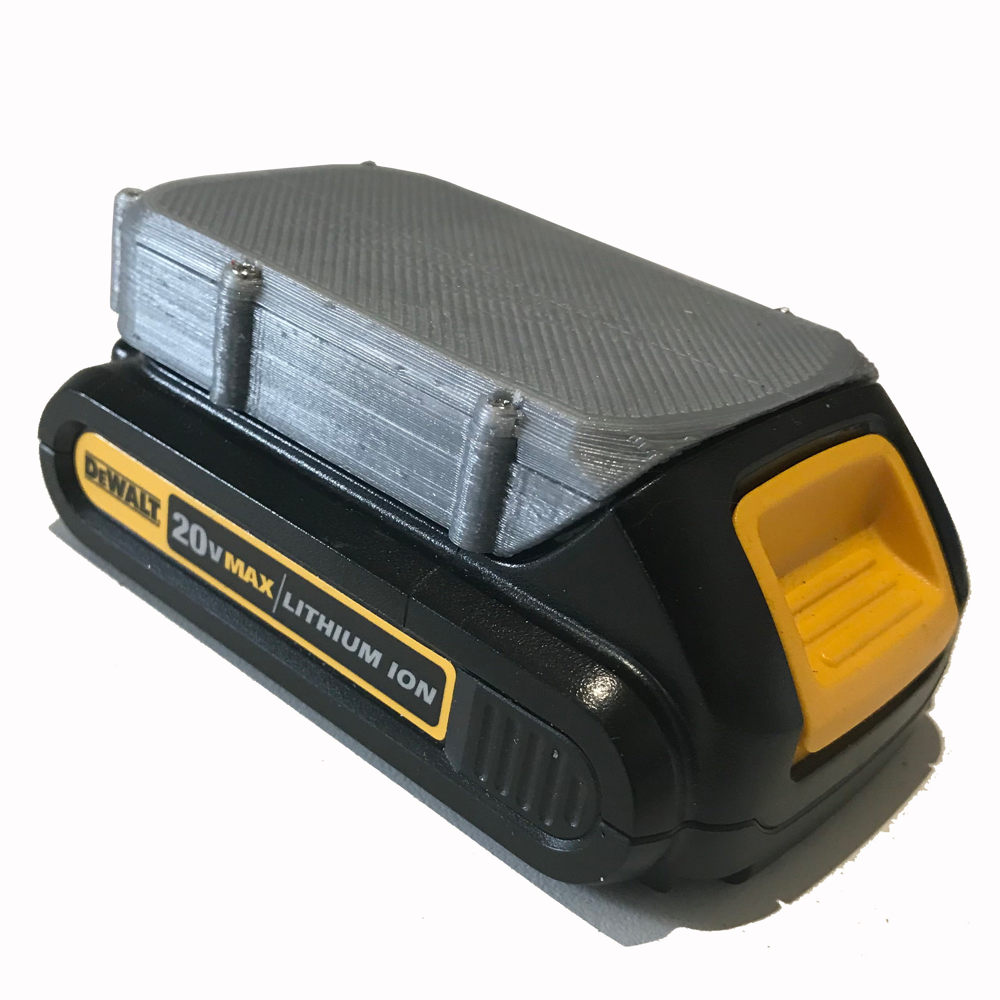

A PCB kit that lets a TS-100 soldering iron run directly off a DeWalt 20V MAX battery. The board handles the battery interface, provides manual on/off control, and uses a purely analog undervoltage lockout circuit to cut power before the cells drop to a damaging state of charge — no microcontroller required.
The TS-100 is a compact, digitally controlled iron with a loyal following among hobbyists and field techs. It accepts DC power via a 5.5×2.5 mm barrel jack and operates happily anywhere in the 12–24 V range, which puts a fully charged DeWalt 20V MAX pack — sitting at roughly 20 V — squarely in its sweet spot. Anyone already invested in the DeWalt ecosystem has the energy storage sitting in their tool bag; the missing piece was a safe, reliable interface between the two.
The protection circuit is built around a MOSFET acting as the main power switch in series with the output. Its gate is driven by an NPN transistor, which is in turn biased through a Zener diode. When battery voltage is within the acceptable operating window the Zener keeps the transistor — and therefore the MOSFET — in conduction. If voltage drops below the Zener's threshold the transistor loses its drive, the MOSFET opens, and the output is cut before the cells reach a damaging depth of discharge. The whole scheme is passive: no firmware, no MCU, nothing to lock up or update.
Supporting the switch are a bulk decoupling capacitor, a small resistor network for biasing and gate drive, and a 3 mm green LED on the output rail that gives an unambiguous visual indication that power is live. A slide switch on the board provides manual control independent of the protection logic. The output connector is a 5.5×2.5 mm DC barrel jack on a three-foot cable — enough reach to keep the battery pack clear of the work area.
The kit is through-hole throughout, making it accessible to anyone comfortable with basic soldering.
An optional two-piece 3D-printed shell — a main body and a lid pulled together with hardware fasteners — houses the PCB and gives the finished unit a clean, purposeful look. The enclosure was designed in SolidWorks and is available as STL files for printing on any FDM machine. It can be used straight off the build plate or finished with filler-primer and paint for a smoother surface texture.



